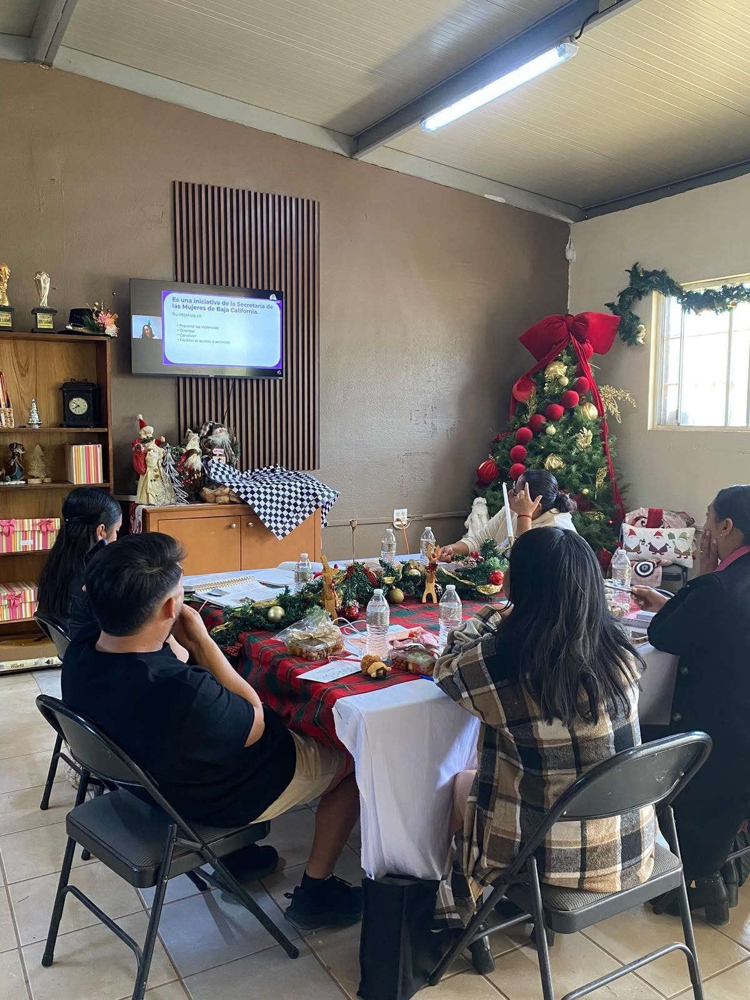
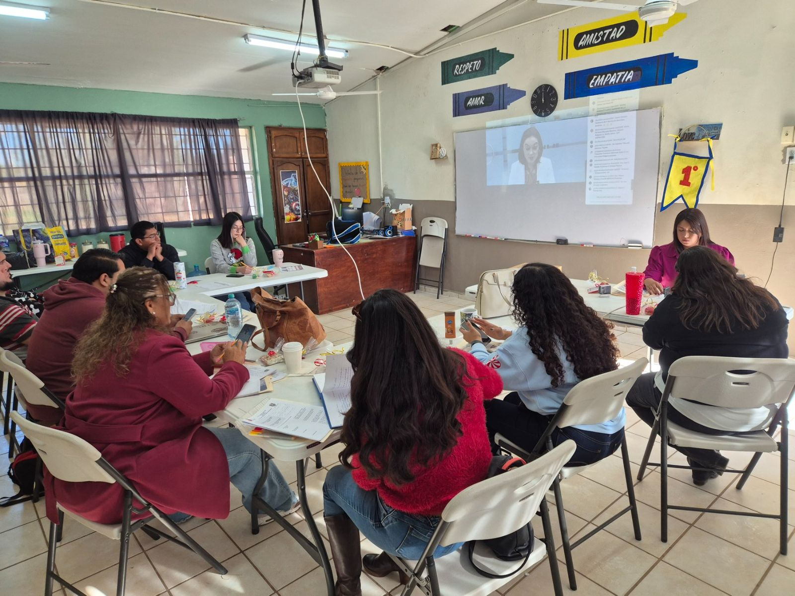
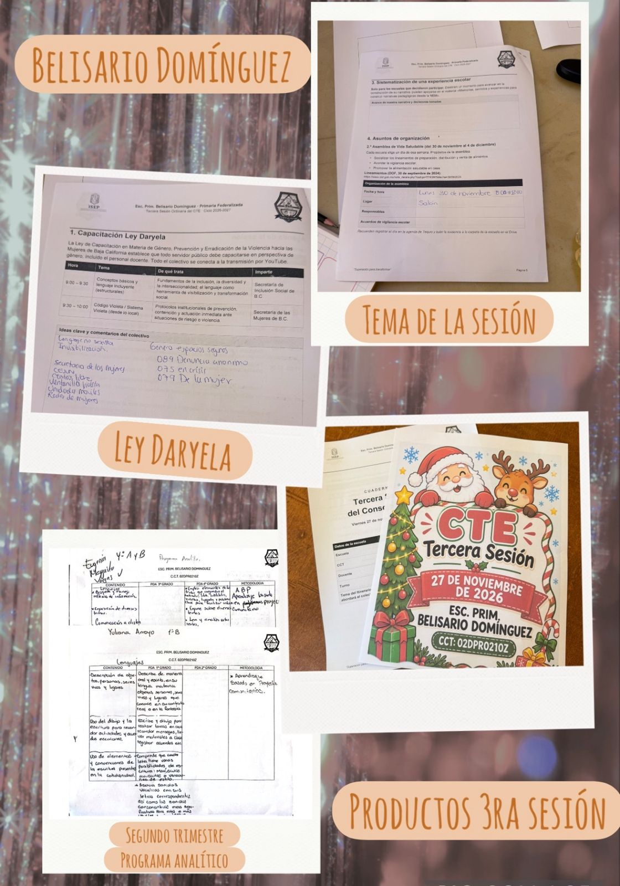
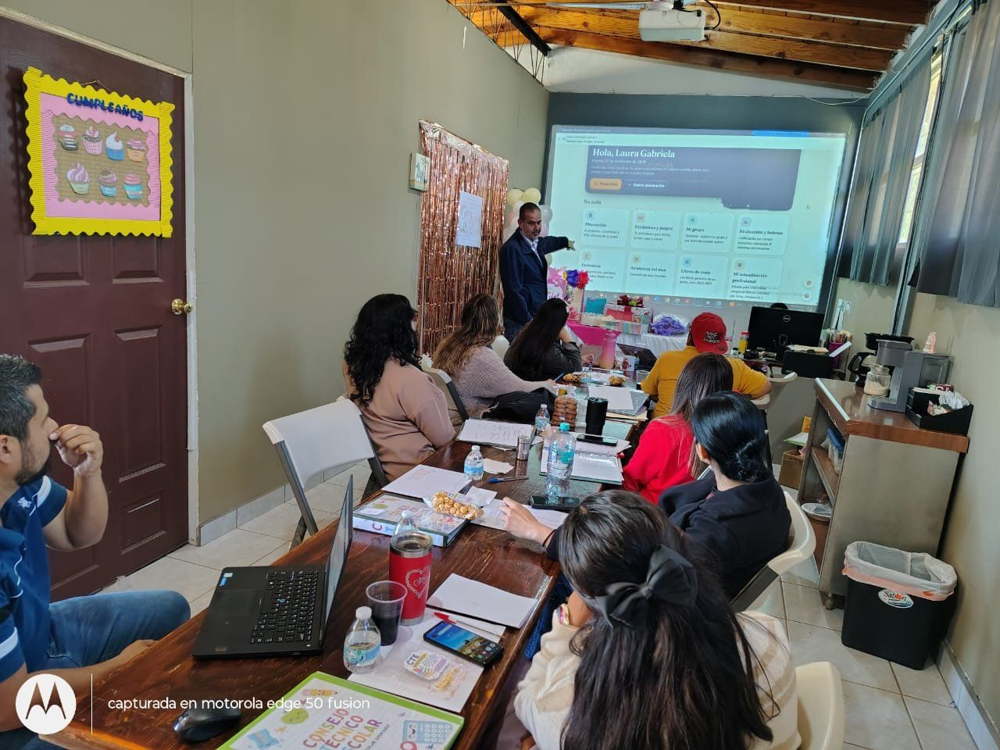
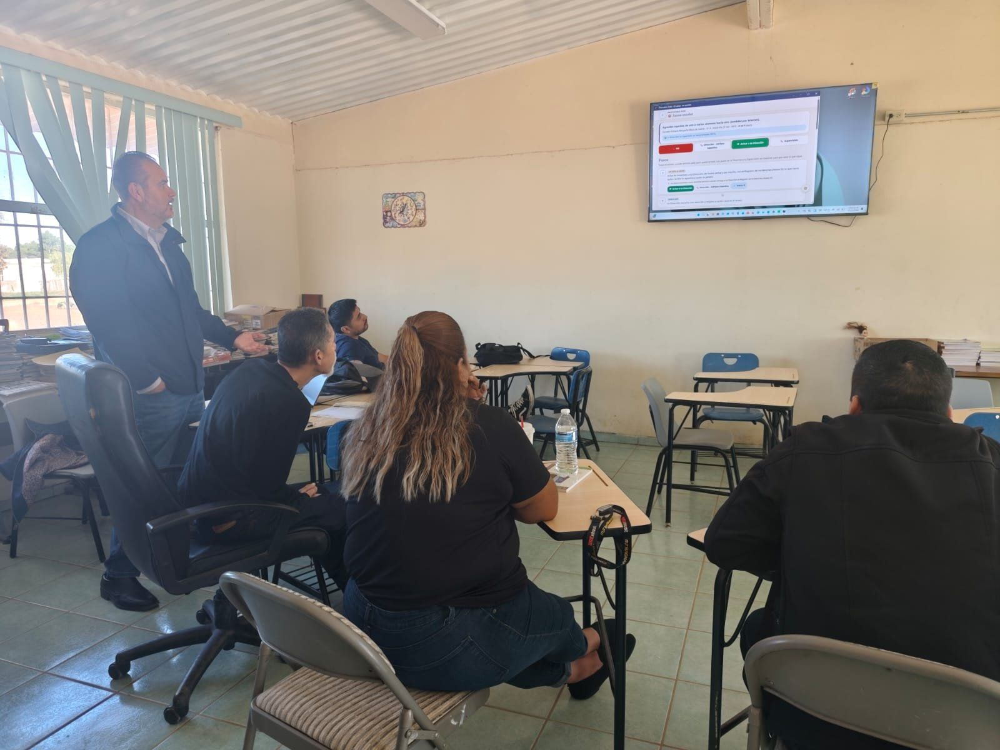

Zona Escolar 050
Zona Escolar 050El viernes 27 de noviembre, maestras y maestros de las escuelas primarias de la Zona Escolar 050 se reunieron en la tercera sesión ordinaria del Consejo Técnico Escolar del ciclo 2026-2027. Cada sesión fue conducida por quien dirige la escuela: las de organización completa sesionaron en sus planteles; las escuelas multigrado trabajaron en sesión conjunta, y la escuela Luis Donaldo Colosio Murrieta, de turno vespertino, lo hizo en su propio plantel.
Al terminar la jornada, cada escuela subió a Tequio, la plataforma de seguimiento de la zona, sus fotos, listas de asistencia, minutas y productos de trabajo. Con esas evidencias, que compartieron directivos y Asesores Técnico Pedagógicos, preparamos este recuento.
Ley Daryela: hablar y actuar con respeto
La sesión abrió con la capacitación de la Ley Daryela, que establece que todo servidor público de Baja California debe formarse en perspectiva de género. Los colectivos se conectaron a la transmisión en dos bloques: conceptos básicos y lenguaje incluyente, a cargo de la Secretaría de Inclusión Social, y el Código Violeta, a cargo de la Secretaría de las Mujeres de Baja California.
Los docentes anotaron ideas clave como el lenguaje no sexista, la importancia de nombrar correctamente a todas las personas y los servicios de apoyo disponibles para prevenir, orientar y canalizar situaciones de violencia.


Inclusión: ajustes razonables para cada estudiante
El tema central de la guía fue la atención de niñas, niños y adolescentes con discapacidad y con aptitudes sobresalientes. Los colectivos repasaron conceptos como el Diseño Universal para el Aprendizaje, las Barreras para el Aprendizaje y la Participación, los ajustes razonables y la accesibilidad universal, y definieron acciones concretas para atender la diversidad en cada fase.

Acompañamiento de la Mesa Técnica
Como parte de la jornada, la Mesa Técnica de la Supervisión —los Asesores Técnico Pedagógicos de la zona y el supervisor escolar, Mtro. Carlos Gabriel Ortega Gutiérrez— acompañó a los colectivos en sus sesiones y apoyó a las escuelas para subir sus evidencias a Tequio. Los ATP registraron sus visitas:
Herramientas digitales al servicio del aula
En varias escuelas se presentaron las plataformas de la zona: Tlamatini Aula, para la planeación, el pase de lista y la evaluación del grupo, y la aplicación de Protocolos del PPIE, que guía paso a paso al docente ante una situación de riesgo y avisa a la dirección y a la Supervisión. En la escuela Emiliano Zapata, una maestra compartió con sus compañeros cómo Tlamatini le ha ayudado a organizar sus actividades diarias.


Gracias a nuestras escuelas
El mérito de esta jornada es de cada colectivo docente y de quienes lo dirigen:
Belisario Domínguez
Mtro. Luis Ángel Bandala Guerrero
Josefa Ortiz de Domínguez
Mtro. Carlos Gustavo Domínguez Figueroa
Niños Héroes
Mtro. José Feliciano Gutiérrez Valdez
13 de Septiembre
Mtra. Cecilia Gómez Martínez
Pte. Adolfo López Mateos
Mtro. Gilberto Medina Araujo
Emiliano Zapata
Mtro. Juan Carlos Chávez Bermúdez
Margarita Maza de Juárez
Mtra. Adriana Valentina Zavala Cruz
Maximino Virgen Flores
Mtra. Citlali Shugey Nepita Anaya
José Vasconcelos
Mtro. Jesús González Urdiano
James S. Yglesias
Mtra. Lorena Valdez Rivera
Luis Donaldo Colosio Murrieta
Mtro. Efraín López Alvarado
Narciso Mendoza
Mtro. Armando Calderón Hernández
Ignacio Allende
Mtro. Jesús Aarón Montero Meléndrez
José Ma. Pino Suárez
Mtro. Armando Urzúa Osuna
Lo que viene
- Segunda Asamblea de Vida Saludable, del 30 de noviembre al 4 de diciembre: cada escuela eligió su día para socializar los lineamientos de alimentación con las familias.
- Estrategia de clases a distancia para los días de contingencia por lluvia.
- Estrategia Estatal de Fomento a la Lectura «Érase una vez», con las actividades que faltan por realizar.
- Inventario de computadoras para rescatarlas con el software de la zona.
- Posadas, villancicos y actividades de cierre de año en cada comunidad escolar.
Felicidades a cada colectivo: con su trabajo, esta sesión fue un espacio de reflexión y colaboración en favor de nuestras niñas y niños.